Bosques

Nuestro Trabajo
Protección de bosques saludables y conectados
Naturaleza y Cultura trabaja por proteger grandes extensiones de bosques. Ecosistemas críticos que sustentan la biodiversidad, regulan el clima, proveen agua limpia y apoyan a las comunidades indígenas y locales.
Al conservar paisajes extensos, salvaguardamos corredores biológicos esenciales, prevenimos la deforestación y fortalecemos la resiliencia de los ecosistemas, garantizando que la naturaleza prospere para las generaciones futuras.
Trabajamos junto a comunidades locales, pueblos indígenas y gobiernos para fortalecer la conservación de bosques en América Latina.

Programas Destacados

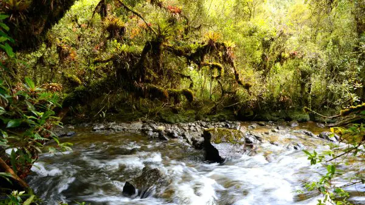
URGENT
 ECUADOR, PERÚ
ECUADOR, PERÚ
Corredor de Conservación Transfronterizo Andino Amazónico
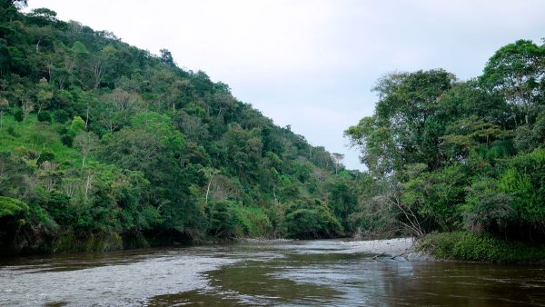
URGENT
ECUADOR
Conservación de Fuentes de Agua
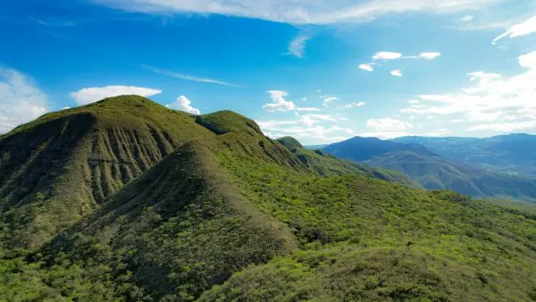
PERÚ
Bosques Secos del Marañón
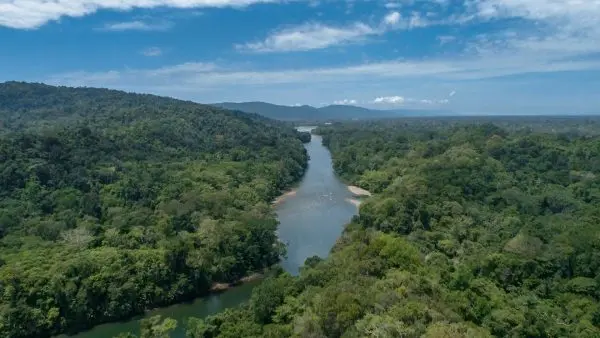
ECUADOR
Plataforma Amazónica por los Bosques, el Clima y el Bienestar Humano
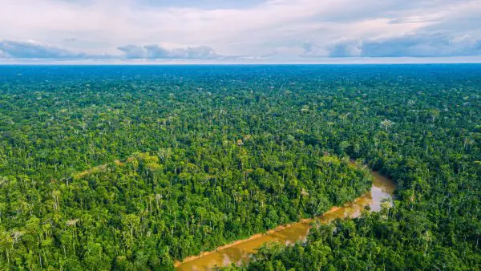
ECUADOR
Fondo Futuro Amazónico
Creando y Fortaleciendo Áreas Protegidas
Ayudamos a establecer nuevas áreas protegidas y a fortalecer las existentes en lugares que enfrentan amenazas urgentes.las áreas protegidas, territorios comunitarios y otras formas de conservación forman redes interconectadas, los bosques son más resilientes y la biodiversidad tiene espacio para desplazarse y adaptarse.
Los bosques no siguen fronteras políticas. Al apoyar la planificación y colaboración a escala de paisaje, ayudamos a proteger ecosistemas conectados a través de diversas regiones.
En un mundo cada vez más fragmentado, muchas especies tienen menos espacio para migrar, dispersarse, alimentarse y prosperar. Al vincular áreas protegidas nacionales, regionales y locales, creamos corredores biológicos vitales que permiten que especies clave como el jaguar, el cóndor andino y el oso de anteojos, se desplacen libremente en busca de alimento, agua, refugio y sitios de reproducción.
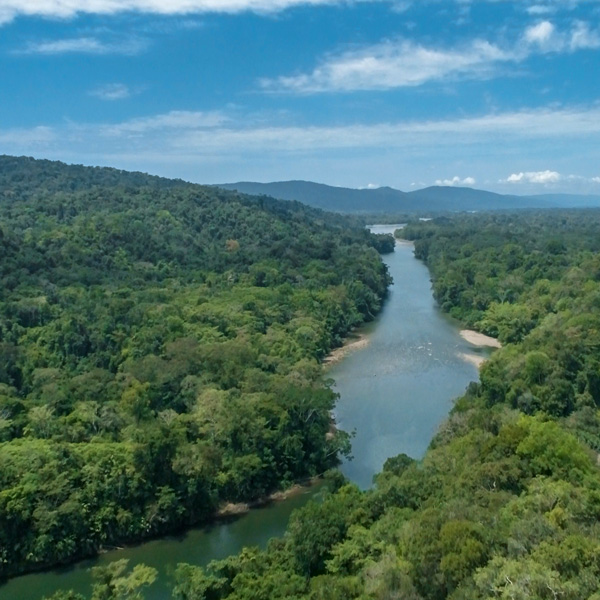
Conservación liderada por las personas
Una solución de conservación que perdura
Proteger los bosques no es un logro de una sola vez. La conservación duradera depende de la custodia del territorio, un liderazgo local sólido y los recursos a largo plazo necesarios para mantener la protección frente a los cambios políticos, económicos y climáticos.
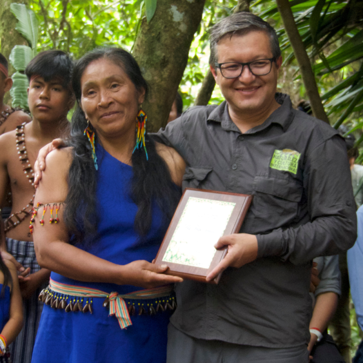
Bosques Conectados
Conservación a Escala de Paisaje
Cuando los bosques se fragmentan, los ecosistemas se vuelven menos resilientes. Los corredores biológicos se interrumpen, las cuencas hidrográficas se alteran y los bosques se vuelven más vulnerables a los incendios, las actividades ilegales y el cambio de uso de suelo. Conectar bosques protegidos ayuda a mantener el funcionamiento de paisajes enteros, ahora y en el futuro.
Esto es válido independientemente de si las piezas individuales son parques nacionales, territorios indígenas, áreas subnacionales protegidas o una combinación de todas las anteriores.
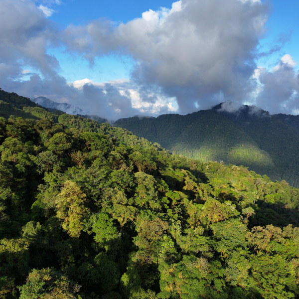
Ecosistemas que protegemos
Trabajamos en los ecosistemas más biodiversos, pero también más amenazados del planeta.
Un ecosistema está compuesto por todos los seres vivos que comparten un entorno, desde plantas y animales hasta organismos microscópicos. Garantizar la integridad y la salud de ecosistemas completos proporciona hábitat para la vida silvestre y servicios ecosistémicos vitales para toda forma de vida.
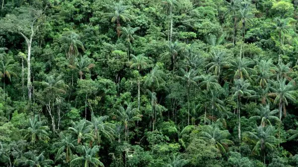
Selva Amazónica
La selva amazónica es el bosque tropical más extenso de la Tierra y alberga una gran diversidad de especies y vegetales, además de pueblos indígenas.
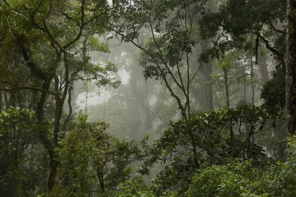
Bosque Nuboso Andino
Los bosques nublados andinos albergan el mayor número de especies endémicas: plantas y animales que no se encuentran en ningún otro lugar del mundo.
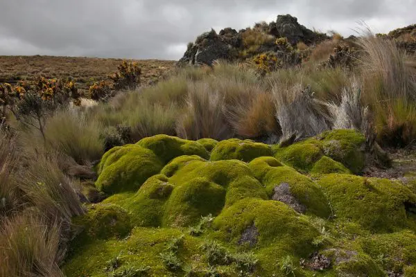
Páramos
Los páramos son ecosistemas de pastizales de alta altitud situados por encima del límite de vegetación arbórea, pero por debajo de la línea de nieve...
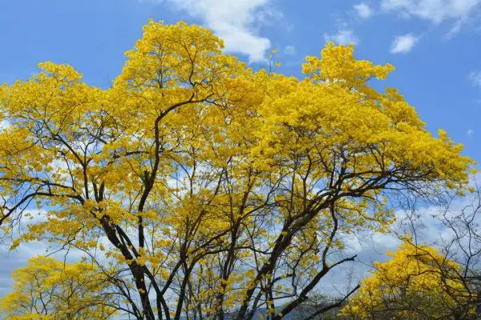
Bosques Secos Tropicales
Los bosques tropicales caducifolios (o secos) albergan una amplia gama de especies con adaptaciones únicas. Trabajamos con las comunidades locales para conservar estos bosques frágiles.
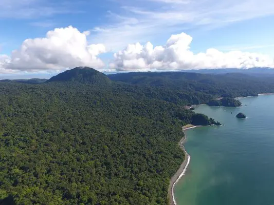
Ecosistemas Marinos y Costeros
Los manglares, estuarios, lagunas y océanos sustentan las pesquerías y aportan agua dulce para los humedales. Son clave por su biodiversidad marina y para aves migratorias.
Previniendo pérdidas irreemplazables
Amenazas a los bosques y lo que la
protección previene
Los bosques intactos enfrentan una pressure creciente debido a la
deforestación, la degradación y la fragmentación. Estas amenazas
pueden provenir del cambio de uso de suelo, la extracción
insostenible, las carreteras que abren áreas remotas a actividades
ilegales y los incendios cada vez más intensos impulsados por el
clima.
Proteger los bosques a tiempo, antes de que sufran una degradación
severa, puede prevenir pérdidas irreversibles. Cuando los bosques
permanecen intactos, continúan sustentando la
biodiversidad,
almacenando carbono, manteniendo los ciclos
del agua y
proporcionando una base para comunidades resilientes.
Cómo puedes ayudar a proteger los bosques
Proteger los bosques a gran escala requiere colaboración, compromiso y una visión de largo plazo. En Naturaleza y Cultura Internacional trabajamos junto a pueblos indígenas, comunidades locales, gobiernos y aliados para fortalecer la gestión territorial, ampliar las áreas de conservación y mantener los bosques en pie donde más se necesitan.
Conocer, valorar y apoyar estos esfuerzos es fundamental para asegurar que los paisajes más biodiversos del planeta sigan siendo fuente de vida para las generaciones presentes y futuras.
Conoce más sobre nuestro trabajo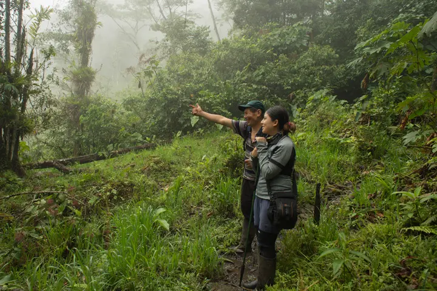
Financieros y
Reportes Medios de
Comunicación Publicaciones Investigaciones Contáctanos Políticas de
Privacidad
Internacional
Naturaleza y Cultura
Internacional
es una
organización
no
gubernamental 501 (c) (e)
EIN: 33-0773524
Del Mar, CA 92014, USA Llámanos +1 (858) 259-0374 Escríbenos hola@naturalezaycultura.org Síguenos en Redes Sociales